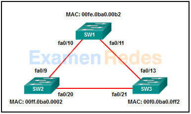
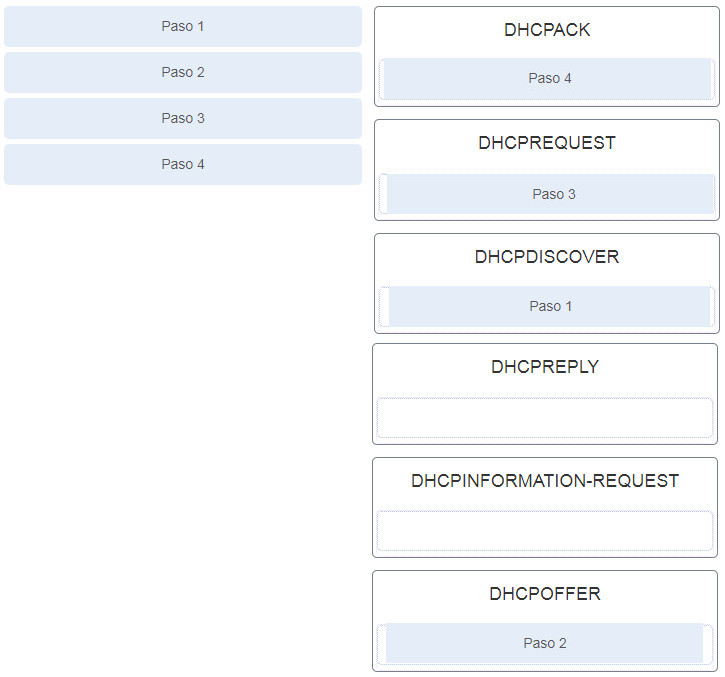
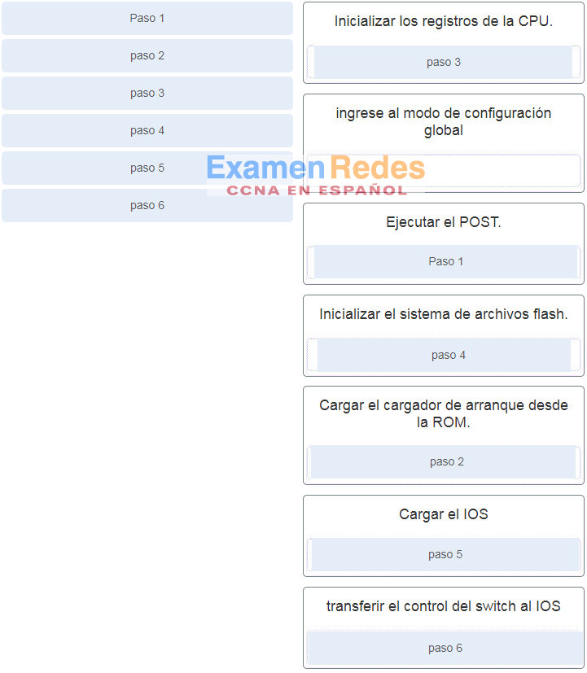

#separator:tab
#html:true
#tags column:3
"1. Los usuarios se quejan de un acceso esporádico a Internet cada tarde. ¿Qué se debe hacer o verificar?
- Compruebe que no hay una ruta predeterminada en ninguna de las tablas de enrutamiento del router perimetral.
- Cree una ruta estática flotante a esa red.
- Cree rutas estáticas a todas las redes internas y una ruta predeterminada a Internet.
- Compruebe las estadísticas de la ruta predeterminada para la sobresaturación.
"
"2. Consulte la ilustración. ¿Qué hará el router R1 con un paquete que tiene una dirección IPv6 de destino 2001:db8:cafe:5::1?
CCNA 2 (Versión 7.00) – Examen final de SRWE P1- Descartará el paquete
- Reenviará el paquete por GigabitEthernet0/0.
- Reenviará el paquete por Serial0/0/0.
- Reenviará el paquete por GigabitEthernet0/1.
"
"3. Haga coincidir el número de paso con la secuencia de etapas que se producen durante el proceso de conmutación por error de HSRP. (No se utilizan todas las opciones).
"
"4. Seleccione los tres modos de establecimiento de canales PAgP. (Escoja tres opciones).
- alternativo
- auto
- designado
- activo
- deseado
- on
"
"5. Consulte la exhibición. Un switch de capa 3 se encarga del routing para tres VLAN y se conecta a un router para obtener conectividad a Internet. ¿Cuáles son las dos configuraciones que se aplicarían al switch? (Elija dos).
CCNA 2 7.02 Examen Final Preguntas y Respuestas P57
(config)# interface vlan 1
(config-if)# ip address 192.168.1.2 255.255.255.0
(config-if)# no shutdown
(config)# interface gigabitethernet 1/1
(config-if)# no switchport
(config-if)# ip address 192.168.1.2 255.255.255.252
(config)# ip routing
(config)# interface gigabitethernet1/1
(config-if)# switchport mode trunk
(config)# interface fastethernet0/4
(config-if)# switchport mode trunk
6. El enrutamiento entre VLAN exitoso ha estado funcionando en una red con varias VLAN a través de varios switches durante algún tiempo. Cuando falla un vínculo troncal entre switch y el protocolo de árbol de expansión muestra un vínculo troncal de copia de seguridad, se informa de que los hosts de dos VLAN pueden acceder a algunos recursos de red, pero no a todos los que se podía acceder anteriormente. Los hosts de todas las demás VLAN no tienen este problema. ¿Cuál es la causa más probable de este problema?
- También falló el enrutamiento entre VLAN cuando falló el enlace troncal.
- Las VLAN permitidas en el vínculo de copia de seguridad no se configuraron correctamente.
- Error en el protocolo de enlace troncal dinámico en el vínculo.
- Se ha deshabilitado la función de puerto perimetral protegido en las interfaces troncal de respaldo.
"
"7. Consulte la ilustración. El administrador de red configura ambos switches como se muestra. Sin embargo, el host C no puede hacer ping al host D y el host E no puede hacer ping al host F. ¿Qué debe hacer el administrador para habilitar esta comunicación?
CCNA 2 (Versión 7.00) – Examen final de SRWE Preguntas 7- Configurar cualquier puerto de enlace troncal en el modo dinámico deseado.
- Eliminar la VLAN nativa del enlace troncal.
- Asociar los hosts A y B con la VLAN 10 en lugar de la VLAN 1.
- Incluir un router en la topología.
- Agregar el comando switchport nonegotiate a la configuración del SW2.
"
"8. Consulte la ilustración. Según la configuración y el resultado que se muestran, ¿por qué falta la VLAN 99?
CCNA 2 (Versión 7.00) – Examen final de SRWE Preguntas 8- porque la VLAN 1 está conectada y sólo puede haber una VLAN de administración en el switch
- porque la VLAN 99 no es una VLAN de administración válida
- porque la VLAN 99 aún no se ha creado
- porque hay un problema de cableado en la VLAN 99
"
"9. ¿Cuáles son los tres pares de modos de enlace troncal que establecen un enlace troncal funcional entre dos switches Cisco? (Elija tres).
- Dinámico deseado y enlace troncal
- Acceso y dinámico automático
- Dinámico deseado y dinámico automático
- Acceso y enlace troncal
- Dinámico automático y dinámico automático
- Dinámico deseado y dinámico deseado
"
"10. Se ha configurado una ruta estática en un router. Sin embargo, la red de destino ya no existe. ¿Qué debe hacer un administrador para eliminar la ruta estática de la tabla de enrutamiento?
- Nada. La ruta estática desaparecerá por sí sola.
- Cambie la distancia administrativa para esa ruta.
- Cambie la métrica de enrutamiento para esa ruta.
- Elimine la ruta usando el comando no ip route .
Explique: Cuando la red de destino especificada en una ruta estática ya no existe, la ruta estática permanece en la tabla de enrutamiento hasta que se elimina manualmente mediante el comando no ip route.
"
"11. Consulte la ilustración. Un administrador de redes agregó una nueva subred a la red y necesita que los hosts de dicha subred reciban direcciones IPv4 del servidor DHCPv4.
¿Qué dos comandos permiten que los hosts de la nueva subred reciban las direcciones del servidor DHCP4? (Elija dos opciones.)
CCNA 2 (Versión 7.00) – Examen final de SRWE Preguntas 11- R1(config-if)# ip helper-address 10.1.0.254
- R2(config)# interface G0/0
- R1(config-if)# ip helper-address 10.2.0.250
- R2(config-if)# ip helper-address 10.2.0.250
- R1(config)# interface G0/0
- R1(config)# interface G0/1
"
"12. Consulte la exhibición. Se configuró el R1 tal como se muestra. Sin embargo, la PC1 no puede recibir ninguna dirección IPv4. ¿Cuál es el problema?
CCNA 2 (Versión 7.00) – Examen final de SRWE Preguntas 12- Se debe instalar un servidor de DHCP en la misma LAN que el host que recibe la dirección IP.
- No se emitió el comando ip address dhcp en la interfaz Gi0/1.
- El comando ip helper-address se aplicó en una interfaz incorrecta.
- No se configuró el R1 como servidor de DHCPv4.
"
"13. Consulte la ilustración. ¿Qué se puede concluir acerca de la configuración mostrada en R1?
CCNA 2 (Versión 7.00) – Examen final de SRWE Preguntas 13- R1 está configurado como un agente de retransmisión DHCPv4.
- R1 transmitirá solicitudes DHCPv4 en nombre de clientes DHCPv4 locales.
- R1 enviará un mensaje a un cliente DHCPv4 local para ponerse en contacto con un servidor DHCPv4 en 10.10.10.8.
- R1 funciona como un servidor DHCPv4.
"
"14. ¿Cuáles dos funciones son realizadas por un WLC cuando se usa el control de acceso de medios divididos (MAC)? (Escoja dos opciones).
- acuses de recibo y retransmisiones de paquetes
- Traducción de tramas a otros protocolos
- asociación y re-asociación de clientes itinerantes
- señales y respuestas de sonda
- colas de trama y priorización de paquetes
"
"15. Una compañía está implementando una red inalámbrica en la instalación de distribución en la periferia de Boston. El depósito es muy grande y necesita utilizar varios puntos de acceso. Debido a que algunos de los dispositivos de la compañía aún operan a 2.4 GHz, el administrador de red decide implementar el estándar 802.11 g. ¿Qué asignación de canales en varios puntos de acceso garantizará que los canales inalámbricos no se superpongan?
- Canales 2, 6 y 10
- Canales 1, 6 y 11
- Canales 1, 5 y 9
- Canales 1, 7 y 13
"
"16. ¿Qué protocolo debe deshabilitarse para ayudar a mitigar los ataques de VLAN?
"
"17. Una política de seguridad de la compañía requiere que todas las direcciones MAC se aprendan y agreguen dinámicamente a la tabla de direcciones MAC y a la configuración en ejecución en cada switch. ¿Qué configuración de seguridad de puertos logrará esto?
- direcciones MAC autoprotegidas
- direcciones MAC seguras dinámicas
- direcciones MAC seguras estáticas
- direcciones MAC seguras persistentes
"
"18. ¿Qué ataque de red se mitiga al habilitar la guardia BPDU?
- CAM ataques de desbordamiento de tabla
- Servidores DHCP no fiables en una red
- Suplantación de dirección MAC
- Switches no fiables en una red
"
"19. Un nuevo switch de capa 3 está conectado a un router y se está configurando para el enrutamiento InterVLAN. ¿Cuáles son tres de los cinco pasos necesarios para la configuración? (Escoja tres opciones).
- modificando la VLAN predeterminada
- habilitar el routing IP
- creando interfaces SVI
- asignando los puertos a la VLAN nativa
- asignando puertos a VLANs
- ajustando la métrica de ruta
- eliminando la VLAN predeterminada
"
"19. Un nuevo switch de capa 3 está conectado a un router y se está configurando para el enrutamiento InterVLAN. ¿Cuáles son tres de los cinco pasos necesarios para la configuración? (Escoja tres opciones).
Caso 1
- modificando la VLAN predeterminada
- habilitar el routing IP
- creando interfaces SVI
- asignando los puertos a la VLAN nativa
- asignando puertos a VLANs
- ajustando la métrica de ruta
- eliminando la VLAN predeterminada
Caso 2:
- habilitar el routing IP
- ingresando «sin switchport» en el puerto conectado al router
- ajustando la métrica de ruta
- instalando una ruta estática
- asignando los puertos a la VLAN nativa
- eliminando la VLAN predeterminada
- asignando puertos a VLANs
Caso 3:
- habilitar el routing IP
- eliminando la VLAN predeterminada
- ingresando «sin switchport» en el puerto conectado al router
- establecimiento de adyacencias
- asignar puertos a las VLAN
- ajustando la métrica de ruta
- asignar los puertos a la VLAN nativa
Caso 4:
- establecimiento de adyacencias
- instalando una ruta estática
- ajustando la métrica de ruta
- creando VLANs
- asignando puertos a VLANs
- creando interfaces SVI
- implementar un protocolo de enrutamiento
"
"20. Un administrador de red esta configurando una WLAN. ¿Por qué cambiaría el administrador las direcciones IPv4 DHCP predeterminadas en un AP?
- para restringir el acceso a la WLAN sólo por usuarios autorizados y autenticados
- para supervisar el funcionamiento de la red inalámbrica
- para reducir el riesgo de interferencia de dispositivos externos como hornos de microondas
- para reducir la interceptación de datos o el acceso a la red inalámbrica mediante un rango de direcciones conocido
"
"21. ¿Qué método de asignación de prefijo IPv6 se basa en el prefijo contenido en los mensajes RA?
- DHCPv6 con información de estado
- SLAAC
- estática
- EUI-64
"
"22. ¿Qué prefijo IPv6 está diseñado para la comunicación local de enlace?
- fe80::/10
- 2001: :/3
- fc: :/07
- ff00::/8
"
"23. ¿Qué dos tipos de protocolos de árbol pueden provocar flujos de tráfico subóptimos asumen porque solamente una instancia de árbol de expansión para la red puenteada entero? (Elija dos).
- STP
- RSTP
- PVST+ rápido
- PVST+
- MSTP
"
"24. Consulte la ilustración. Todos los switches que se muestran son switches Cisco 2960 con la misma prioridad predeterminada y funcionan en el mismo ancho de banda. ¿Cuáles son los tres puertos que serán los puertos designados de STP? (Elija tres).

CCNA 2 (Versión 7.00) – Examen final de SRWE Preguntas 23- fa0/20
- fa0/11
- fa0/21
- fa0/13
- fa0/9
- fa0/10
"
"25. Para obtener una descripción general del estado del árbol de una red conmutada, un ingeniero de red publica el comando show spanning-tree en un switch. ¿Qué dos elementos de información este comando display? (Elija dos).
- La dirección IP de la interfaz VLAN de administración.
- El número de broadcasts recibidos en cada puerto raíz.
- El rol de los puertos en todas las VLAN.
- El BID de Root Bridge.
- El estado de puerto de VLAN nativa.
"
"26. Una la característica de reenvío con su tipo. (No se utilizan todas las opciones.)
CCNA 2 (Versión 7.00) – Examen final de SRWE Preguntas 25
"
"27. ¿Qué afirmación describe un resultado después de interconectar varios switches LAN de Cisco?
- Existe un dominio de colisión en el switch.
- El dominio de difusión se amplía a todos los switches.
- Hay un dominio de difusión y un dominio de colisión por switch.
- Las colisiones de las tramas aumentan en los segmentos que conectan los switches.
"
"28. ¿Qué información usa un switch para completar la tabla de direcciones MAC?
- la dirección MAC de origen y el puerto de salida
- las direcciones MAC de origen y de destino y el puerto de salida
- las direcciones MAC de origen y de destino y el puerto de entrada
- la dirección MAC de origen y el puerto de entrada
- la dirección MAC de destino y el puerto de salida
- la dirección MAC de destino y el puerto de entrada
"
"29. ¿Qué es un método para lanzar un ataque de salto de VLAN?
- enviar direcciones IP suplantadas desde el host atacante
- Introducir un switch falso y habilitar el enlace troncal
- enviar información de VLAN nativa suplantada
- inundar el switch con direcciones MAC
"
"30. Durante el proceso de AAA, ¿cuándo se implementará la autorización?
- Inmediatamente después de que se reciben informes detallados en el paso de registro de AAA
- Inmediatamente después de que un cliente AAA envía información de autenticación a un servidor centralizado
- Inmediatamente después de la determinación de los recursos a los que puede acceder un usuario
- Inmediatamente después de la correcta autenticación en relación con una fuente de datos de AAA
"
"31. ¿Qué protocolo o tecnología desactiva las rutas redundantes para eliminar los bucles de capa 2?
"
"32. Consulte la ilustración. ¿Qué ruta se configuró como ruta estática en una red específica con la dirección del próximo salto?
CCNA 2 (Versión 7.00) – Examen final de SRWE Preguntas 31- C 10.16.2.0/24 is directly connected, Serial0/0/0
- S 10.17.2.0/24 [1/0] via 10.16.2.2
- S 10.17.2.0/24 está directamente conectada, Serial 0/0/0
- S 0.0.0.0/0 [1/0] via 10.16.2.2
"
"33. ¿De qué manera cambia la forma en que un router administra el routing estático si se inhabilita Cisco Express Forwarding?
- Las interfaces Ethernet de accesos múltiples requieren rutas estáticas especificadas completamente para evitar incoherencias de routing.
- No se necesitan las rutas estáticas que utilizan una interfaz de salida.
- No realiza búsquedas recursivas.
- Las interfaces seriales punto a punto requieren rutas estáticas especificadas completamente para evitar incoherencias de routing.
"
"34. Consulte la ilustración. El router R1 tiene una relación de vecino OSPF con el router ISP a través de la red 192.168.0.32. El enlace de red 192.168.0.36 debe funcionar como respaldo cuando deja de funcionar el enlace OSPF. Se emitió el comando de ruta estática flotante ip route 0.0.0.0 0.0.0.0 S0/0/1 100 en el R1, y ahora el tráfico usa el enlace de respaldo, aun cuando el enlace OSPF está activo y en funcionamiento. ¿Qué modificaciones se deben realizar al comando de ruta estática a fin de que el tráfico use solo el enlace OSPF cuando este se encuentre activo?
CCNA 2 (Versión 7.00) – Examen final de SRWE Preguntas 33- Cambiar la red de destino a 192.168.0.34.
- Agregar la dirección de vecino de siguiente salto 192.168.0.36.
- Cambiar la distancia administrativa a 120.
- Cambiar la distancia administrativa a 1.
"
"35. En una página Resumen del WLC 3504 de Cisco ( Avanzado > Resumen ), ¿qué pestaña permite a un administrador de red configurar una WLAN determinada con una directiva WPA2?
- SEGURIDAD
- INALÁMBRICO
- ADMINISTRACIÓN
- Redes de área local inalámbrica (WLAN)
"
"36. ¿Cuál es el término común que se da a los mensajes de registro SNMP generados por dispositivos de red y enviados al servidor SNMP?
- Auditoría
- trampas
- Acuses de recibo
- advertencias
"
"37. Un administrador de red de una pequeña empresa publicitaria está configurando la seguridad WLAN mediante el método PSK WPA2. ¿Qué credenciales necesitan los usuarios de oficina para conectar sus portátiles a la WLAN?
- el nombre de usuario y la contraseña de la empresa a través del servicio Active Directory
- una clave que coincida con la clave en el AP
- un nombre de usuario y contraseña configurados en el AP
- una frase de contraseña de usuario
"
"38. ¿Qué tipo de ruta estática se configura con una mayor distancia administrativa a fin de proporcionar una ruta de respaldo a una ruta descubierta por un protocolo de routing dinámico?
- Ruta estática flotante
- Ruta estática estándar
- Ruta estática predeterminada
- Ruta estática resumida
"
"39. Consulte la ilustración. El R1 se configuró con el comando de ruta estática ip route 209.165.200.224 255.255.255.224 S0/0/0 y, en consecuencia, los usuarios en la red 172.16.0.0/16 no pueden acceder a los recursos de Internet. ¿Cómo se debe modificar esta ruta estática para permitir que el tráfico de usuarios de la LAN llegue a Internet?
CCNA 2 (Versión 7.00) – Examen final de SRWE Preguntas 38- Agregar la dirección de vecino de siguiente salto 209.165.200.226.
- Cambiar la interfaz de salida a S0/0/1.
- Agregar una distancia administrativa de 254.
- Cambiar la red y la máscara de destino a 0.0.0.0 0.0.0.0.
"
"40. Consulte la ilustración. El router R1 actualmente utiliza una ruta de EIGRP obtenida de la Sucursal2 para acceder a la red 10.10.0.0/16. ¿Qué ruta estática flotante creará una ruta de respaldo a la red 10.10.0.0/16 en caso de que el enlace entre el R1 y la Sucursal2 deje de funcionar?
CCNA 2 (Versión 7.00) – Examen final de SRWE Preguntas 39- ip route 10.10.0.0 255.255.0.0 Serial 0/0/0 100
- ip route 10.10.0.0 255.255.0.0 209.165.200.226 100
- ip route 10.10.0.0 255.255.0.0 209.165.200.225 100
- ip route 10.10.0.0 255.255.0.0 209.165.200.225 50
"
"41. ¿Qué comando crea una ruta estática en el R2 para llegar a la PC B?
CCNA 2 (Versión 7.00) – Examen final de SRWE Preguntas 40- R2(config)# ip route 172.16.2.1 255.255.255.0 172.16.3.1
- R2(config)# ip route 172.16.2.0 255.255.255.0 172.16.2.254
- R2(config)# ip route 172.16.3.0 255.255.255.0 172.16.2.254
- R2(config)# ip route 172.16.2.0 255.255.255.0 172.16.3.1
"
"42. Consulte la ilustración. ¿Cuáles de las siguientes son tres conclusiones que se pueden extraer a partir del resultado que se muestra? (Elija dos).
- El canal de puerto es un canal de capa 3.
- El método de equilibrio de carga es usado puerto de origen al puerto de destino.
- El canal de puerto ID es 2.
- El grupo EtherChannel no funciona.
- La red funciona a la perfección.
"
"43. ¿Cuál es el efecto de ingresar el comando de configuración ip dhcp snooping en un switch?
- Habilita PortFast globalmente en un switch.
- Habilita manualmente un enlace troncal.
- Habilita el DHCP snooping globalmente en un Switch.
- Inhabilita las negociaciones de DTP en los puertos de enlace troncal.
"
"44. Consulte la exhibición. ¿Qué dirección MAC de destino se utiliza cuando las tramas se envían de la estación de trabajo al gateway predeterminado?
CCNA 2 (Versión 7.00) – Examen final de SRWE Preguntas 43- La dirección MAC del router de reenvío
- La dirección MAC del router de reserva
- La dirección MAC del router virtual
- Las direcciones MAC de los routers de reenvío y de reserva
"
"45. ¿Cuáles son tres técnicas de mitigación de ataques de VLAN? (Elija tres opciones.)
- Habilitar la protección de origen.
- Usar VLAN privadas.
- Habilitar manualmente los enlaces troncales.
- Desactivar el DTP.
- Configurar la VLAN nativa en una VLAN sin usar.
- Habilitar la protección BPDU.
"
"46. Consulte la exhibición. Además de las rutas estáticas que direccionan el tráfico a las redes 10.10.0.0/16 y 10.20.0.0/16, el router HQ también está configurado con el siguiente comando:
ip route 0.0.0.0 0.0.0.0 serial 0/1/1
¿Cuál es el propósito de este comando?
CCNA 2 (Versión 7.00) – Examen final de SRWE Preguntas 45- Los paquetes de la red 10.10.0.0/16 serán reenviados a la red 10.20.0.0/16 y los paquetes de la red 10.20.0.0/16 serán reenviados a la red 10.10.0.0/16.
- Los paquetes con una red de destino que no sea 10.10.0.0/16 ni 10.20.0.0/16 ni una red conectada directamente serán reenviados a Internet.
- Los paquetes que se reciben de Internet serán reenviados a una de las LAN conectadas al R1 o al R2.
- Los paquetes destinados a las redes que no están en la tabla de routing del HQ serán descartados.
"
"47. ¿Qué método de cifrado inalámbrico es la manera más segura?
- WEP
- WPA
- WPA2 con AES
- WPA2 con TKIP
"
"48. Consulte la ilustración. Un administrador de red ha conectado dos switches juntos con la tecnología EtherChannel. Si STP se está ejecutando, ¿cuál será el resultado final?
CCNA 2 (Versión 7.00) – Examen final de SRWE Preguntas 47- El bucle resultante creará una difusión excesiva.
- El STP bloqueará uno de los enlaces redundantes.
- Los switches equilibrarán la carga y utilizarán ambos EtherChannels para enviar paquetes.
- Ambos canales de puertos se desconectarán.
"
"49. Consulte la ilustración. ¿Qué ruta estática introduciría un técnico de TI para crear una ruta de respaldo a la red 172.16.1.0 que solo se utiliza si la ruta principal aprendida a través de RIP falla?

CCNA 2 (Versión 7.00) – Examen final de SRWE Preguntas 48- ip route 172.16.1.0 255.255.255.0 s0/0/0 91
- ip route 172.16.1.0 255.255.255.0 s0/0/0 121
- ip route 172.16.1.0 255.255.255.0 s0/0/0 111
- ip route 172.16.1.0 255.255.255.0 s0/0/0
"
"50. Después de conectar cuatro PC a los puertos del switch, configurar el SSID y establecer las propiedades de autenticación para una red de oficina pequeña, un técnico prueba correctamente la conectividad de todos los PC conectados al switch y a la WLAN. A continuación, se configura un firewall en el dispositivo antes de conectarlo a Internet. ¿Qué tipo de dispositivo de red incluye todas las características descritas?
- Router inalámbrico
- dispositivo de firewall
- switch
- punto de acceso inalámbrico independiente
"
"51. Un administrador intenta eliminar configuraciones de un switch. Luego de usar el comando erase startup-config y de volver a cargar el switch, el administrador advierte que aún existen las VLAN 10 y 100 en el switch. ¿Por qué no se eliminaron estas VLAN?
- Estas VLAN son VLAN predeterminadas que no se pueden eliminar.
- Estas VLAN no se pueden eliminar a menos que el switch esté en modo de cliente VTP.
- Estas VLAN solo se pueden eliminar del switch mediante el uso de los comandos no vlan 10 y no vlan 100 .
- Porque estas VLAN se almacenan en un archivo denominado vlan.dat que está ubicado en la memoria flash y se debe eliminar de forma manual.
"
"52. Consulte la ilustración. ¿Cuáles son los posibles roles de puerto para los puertos A, B, C y D en esta red con el protocolo RSTP habilitado?
CCNA 2 (Versión 7.00) – Examen final de SRWE Preguntas 51- Designado, raíz, alternativo, raíz
- Alternativo, designado, raíz, raíz
- Designado, alternativo, raíz, raíz
- Alternativo, raíz, designado, raíz
"
"53. ¿Cuál es una opción de configuración segura para el acceso remoto a un dispositivo de red?
- Configurar Telnet.
- Configurar una ACL y aplicarla a las líneas VTY.
- Configurar 802.1x.
- Configurar SSH.
"
"54. Una el estado de enlace con el estado de la interfaz y el protocolo. (No se utilizan todas las opciones.)

CCNA 2 (Versión 7.00) – Examen final de SRWE Preguntas 53
"
"55. Consulte la ilustración. El host A envió un paquete al host B. ¿Cuáles serán las direcciones MAC e IP de origen en el paquete cuando este llegue al host B?
CCNA 2 (Versión 7.00) – Examen final de SRWE Preguntas 53
MAC de origen: 00E0.FE91.7799
IP de origen: 10.1.1.1
MAC de origen: 00E0.FE91.7799
IP de origen: 10.1.1.10
MAC de origen: 00E0.FE91.7799
IP de origen: 192.168.1.1
MAC de origen: 00E0.FE10.17A3
IP de origen: 10.1.1.10
MAC de origen: 00E0.FE10.17A3
IP de origen: 192.168.1.1
"
"56. Una la descripción el tipo de VLAN correcto. (No se utilizan todas las opciones.)
CCNA 2 (Versión 7.00) – Examen final de SRWE Preguntas 55
"
"57. Consulte la exhibición. Un administrador de red configura el routing entre VLAN en una red. De momento, solo se usa una VLAN, pero pronto se agregarán más. ¿Cuál es el parámetro que falta y que se muestra como signo de interrogación destacado en el gráfico?
CCNA 2 (Versión 7.00) – Examen final de SRWE Preguntas 56- El que identifica el número de VLAN nativa.
- El que identifica el tipo de encapsulación que se utiliza.
- El que identifica el número de VLAN.
- El que identifica la cantidad de hosts que se permiten en la interfaz.
- El que identifica la subinterfaz.
"
"58. Consulte la exhibición. ¿Cómo se reenvía una trama desde la PCA hacia la PCC si la tabla de direcciones MAC en el switch SW1 está vacía?
CCNA 2 (Versión 7.00) – Examen final de SRWE Preguntas 58- SW1 satura todos los puertos en SW1 con la trama, a excepción del puerto a través del cual la trama ingresó al switch.
- SW1 descarta la trama porque no conoce el destino de la dirección MAC.
- SW1 reenvía la trama directamente a SW2. SW2 satura todos los puertos conectados a SW2 con la trama, a excepción del puerto a través del cual la trama ingresó al switch.
- SW1 satura todos los puertos en el switch con la trama, a excepción del puerto interconectado al switch SW2 y el puerto a través del cual la trama ingresó al switch.
"
"59. Una los tipos de mensaje DHCP con el orden del proceso de DHCPv4. (No se utilizan todas las opciones).

CCNA 2 (Versión 7.00) – Examen final de SRWE Preguntas 58
"
"60. Después de que un host ha generado una dirección IPv6 usando el proceso de DHCPv6 o SLAAC, como puede el host verificar que la dirección es única y por lo tanto utilizable?
- El host envía un mensaje de solicitud echo de ICMPv6 a la dirección aprendida por DHCPv6 o SLAAC y si no reciba respuesta, la direccion se considera unica.
- El host envía una difusión de ARP al enlace local y si ningún host responde, la direccion es considerada unica.
- El host revisa el caché del vecino local buscando la direccion aprendida y su la direccion no esta en el caché, es considerada unica.
- El host envía un mensaje de solicitud de vecino ICMPv6 a la direccion aprendida por DHCPv6 o SLAAC y si no recibe anuncio de vecino de vuelta , la direccion se considera unica.
"
"61. ¿Qué acción se lleva a cabo cuando la dirección MAC de origen de una trama que ingresa a un switch no está en la tabla de direcciones MAC?
- El switch reemplaza la entrada anterior y usa el puerto más actual.
- El switch agrega la dirección MAC y el número de puerto entrante a la tabla.
- El switch agrega una entrada de tabla de direcciones MAC para la dirección MAC de destino y el puerto de salida.
- El switch actualiza el temporizador de actualización para la entrada.
"
"62. Un técnico está solucionando problemas con una WLAN lenta y decide utilizar el enfoque de división del tráfico. ¿Qué dos parámetros tendrían que configurarse para hacer esto? (Escoja dos opciones).
- Configure la banda de 2.4 GHz para el tráfico básico de Internet que no es sensible al tiempo.
- Configure un SSID común para ambas redes divididas.
- Configure el modo de seguridad en WPA Personal TKIP/AES para una red y WPA2 Personal AES para la otra red
- Configure el modo de seguridad en WPA Personal TKIP/AES para ambas redes.
- Configure la banda de 5 GHz para transmitir contenido multimedia y tráfico sensible al tiempo.
"
"63. Un administrador de red está agregando una nueva WLAN en un WLC de la serie 3500 de Cisco. ¿Qué pestaña debe usar el administrador para crear una nueva interfaz VLAN que se utilizará para la nueva WLAN?
- ADMINISTRACIÓN
- CONTROLADOR
- Redes de área local inalámbrica (WLAN)
- INALÁMBRICO
"
"64. ¿Qué dos configuraciones de router inalámbrico predeterminadas pueden afectar la seguridad de la red? (Elija dos opciones).
CCNA 2 (Versión 7.00) – Examen final de SRWE Preguntas P6- Se difunde el SSID.
- Se habilita el filtrado de direcciones MAC.
- Se habilita el cifrado WEP.
- Se selecciona automáticamente el canal inalámbrico.
- Se configura una contraseña de administrador ampliamente conocida.
"
"65. En comparación con las rutas dinámicas, ¿cuáles son las dos ventajas de utilizar rutas estáticas en un router? (Elija dos opciones.)
- Tardan menos tiempo para converger cuando la topología de la red cambia.
- Mejoran la seguridad de la red.
- Mejoran la eficiencia de detección de redes vecinas.
- Cambian de forma automática la ruta hacia la red de destino cuando la topología cambia.
- Utilizan menos recursos del router.
"
"66. Consulte la exhibición. ¿Cuál es la métrica para reenviar un paquete de datos con la dirección de destino IPv6 2001:DB8:ACAD:E:240:BFF:FED4:9DD2?
CCNA 2 (Versión 7.00) – Examen final de SRWE Preguntas P9- 90
- 128
- 2170112
- 2681856
- 2682112
- 3193856
"
"67. ¿Qué protocolo o tecnología es un protocolo propietario de Cisco que se habilita automáticamente en switches 2960?
"
"68. Un administrador de red esta configurando una WLAN. ¿Por qué el administrador usaría un controlador WLAN?
- para proporcionar un servicio priorizado para aplicaciones sensibles al tiempo
- para reducir el riesgo de que se añadan AP no autorizados a la red
- para facilitar la configuración de grupos y la administración de varias WLAN a través de un WLC
- para centralizar la administración de varias WLAN
"
"69. Consulte la exhibición. Un ingeniero de red está configurando un routing IPv6 en la red. ¿Qué comando emitido en el router HQ configurará una ruta predeterminada a Internet para reenviar paquetes a una red de destino IPv6 que no se enumera en la tabla de routing?
CCNA 2 (Versión 7.00) – Examen final de SRWE Preguntas P15- ip route 0.0.0.0 0.0.0.0 serial 0/1/1
- ipv6 route ::1/0 serial 0/1/1
- ipv6 route ::/0 serial 0/0/0
- ipv6 route ::/0 serial 0/1/1
"
"70. Un administrador de red ha encontrado a un usuario que envía una trama 802.1Q de doble etiqueta a un switch. ¿Cuál es la mejor solución para prevenir este tipo de ataque?
- El número de VLAN nativo utilizado en cualquier tronco debe ser una de las VLAN de datos activas.
- Los puertos troncal deben configurarse con la seguridad del puerto.
- Los puertos troncal deben utilizar la VLAN predeterminada como número de VLAN nativo.
- Las VLAN para los puertos de acceso de usuario deben ser distintas de las VLAN nativas utilizadas en los puertos troncal.
"
"71. Consulte la ilustración. El administrador de red está configurando la función de seguridad del puerto en el switch SWC. El administrador emitió el comando show port-security interface fa 0/2 para verificar la configuración. ¿Qué se puede concluir a partir de la salida que se muestra? (Escoja tres opciones).
CCNA 2 (Versión 7.00) – Examen final de SRWE Preguntas P19- Se han detectado tres violaciones de seguridad en esta interfaz.
- Actualmente no hay ningún dispositivo conectado a este puerto.
- Las infracciones de seguridad harán que este puerto se cierre inmediatamente.
- El puerto se configura como un enlace troncal.
- Este puerto está activo actualmente.
- El modo de puerto del switch para esta interfaz es el modo de acceso.
"
"72. ¿Cuáles son las dos afirmaciones que describen características de los puertos enrutados en un switch multicapa? (Elija dos opciones).
- Se debe introducir el comando interface vlan <número de vlan> para crear una VLAN en los puertos enrutados.
- Se usan para los enlaces de punto a multipunto.
- En una red conmutada, se configuran principalmente entre los switches de las capas núcleo y de distribución.
- Admiten subinterfaces, como las interfaces en los routers Cisco IOS.
- No se asocian a una VLAN determinada.
"
"73. Un administrador de red utiliza el modelo de router-on-a-stick para configurar un switch y un router para el routing entre VLAN. ¿Qué configuración se debe aplicar al puerto del switch que se conecta al router?
- Configurarlo como puerto de enlace troncal y permitir únicamente el tráfico sin etiquetas.
- Configurar el puerto como puerto de enlace troncal y asignarlo a la VLAN1.
- Configurar el puerto como puerto de acceso y como miembro de la VLAN1.
- Configurar el puerto como puerto de enlace troncal 802.1q.
"
"74. ¿Cuál es el prefijo IPv6 que se utiliza para direcciones de enlace local?
- FE80::/10
- FC00::/7
- 2001: :/3
- FF01: :/8
"
"75. ¿Cuál es el efecto de ingresar el comando de configuración ip dhcp snooping limit rate 6 en un switch?
- Aprende dinámicamente la dirección L2 y la copia en la configuración en ejecución.
- Restringe el número de mensajes de detección, por segundo, que se recibirán en la interfaz.
- Muestra las asociaciones de direcciones IP a Mac para interfaces de switch.
- Habilita globalmente la seguridad de puerto en el switch.
"
"76. ¿Qué acción realiza un cliente DHCPv4 si recibe más de un DHCPOFFER de varios servidores DHCP?
- Descarta ambas ofertas y envía un nuevo DHCPDISCOVER.
- Envía un DHCPNAK y vuelve a iniciar el proceso DHCP.
- Envía un DHCPREQUEST que identifica qué oferta de arrendamiento está aceptando el cliente.
- Acepta tanto mensajes DHCPOFFER y envía un DHCPACK.
"
"77. Consulte la ilustración. ¿Qué enlace troncal no enviará tráfico después de que el proceso de elección de puente raíz se complete?
CCNA 2 (Versión 7.00) – Examen final de SRWE Preguntas P28- Enlace troncal1
- Enlace troncal2
- Enlace troncal3
- Enlace troncal4
"
"78. Un ingeniero WLAN implementa un WLC y cinco puntos de acceso inalámbricos utilizando el protocolo CAPWAP con la función DTLS para asegurar el plano de control de los dispositivos de red. Durante la prueba de la red inalámbrica, el ingeniero de WLAN nota que el tráfico de datos se está intercambiando entre el WLC y los AP en texto sin formato y no se está cifrando. ¿Cuál es la razón más probable para esto?
- DTLS sólo proporciona seguridad de datos mediante autenticación y no proporciona cifrado para los datos que se mueven entre un hub LAN inalámbrico (WLC) y un punto de acceso (AP).
- Aunque DTLS está habilitado de manera predeterminada para asegurar el canal de control CAPWAP, está deshabilitado de manera predeterminada para el canal de datos.
- El cifrado de datos requiere la instalación de una licencia DTLS en cada punto de acceso (AP) antes de habilitarse en el hub de LAN inalámbrica (WLC).
- DTLS es un protocolo que sólo proporciona seguridad entre el punto de acceso (AP) y el cliente inalámbrico.
"
"79. ¿Qué método de autenticación inalámbrica depende de un servidor de autenticación RADIUS?
- WPA2 comercial
- WPA Personal
- WPA2 Personal
- WEP
"
"80. ¿Cuáles son los dos modos VTP que permiten la creación, modificación y eliminación de las VLAN en el switch local? (Elija dos opciones.)
- Transparente
- Distribución
- Cliente
- Maestro
- Esclavo
- Servidor
"
"81. Consulte la ilustración. ¿Qué hosts recibirán solicitudes de ARP desde el host A, considerando que el puerto Fa0/4 en ambos switches está configurado para llevar tráfico a varias VLAN? (Elija tres opciones.)
CCNA 2 (Versión 7.00) – Examen final de SRWE Preguntas P37- host B
- host D
- host E
- host C
- host F
- host G
"
"82. ¿Cuál sería el motivo principal por el que un atacante podría lanzar un ataque de sobrecarga de la dirección MAC?
- Para que los hosts legítimos no puedan obtener una dirección MAC
- Para que el atacante pueda ejecutar un código arbitrario en el switch
- Para que el switch deje de enviar tráfico
- Para que el atacante pueda ver las tramas con destino a otros hosts
"
"83. Un analista de ciberseguridad está utilizando la herramienta macof para evaluar configuraciones de switches implementados en la red troncal de una organización. ¿A qué tipo de ataque LAN se dirige el analista durante esta evaluación?
- Salto de VLAN
- Suplantación de identidad de DHCP
- VLAN double-tagging
- Desbordamiento de tabla de direcciones MAC
"
"84. ¿Qué declaración es correcta acerca de cómo un switch de Capa 2 determina cómo reenviar fotogramas?
- Solo las tramas con una dirección de destino de difusión se reenvían a todos los puertos del switch activos.
- Las tramas de unidifusión siempre se reenvían, independientemente de la dirección de destino MAC.
- El reenvío de tramas por método de corte garantiza que siempre se descarten las tramas no válidas.
- Las decisiones de reenvío de tramas se basan en la asignación de puertos y la dirección MAC en la tabla CAM.
"
"85. ¿Qué tres estándares de Wi-Fi funcionan en el rango de frecuencias 2.4 GHz? (Elija tres).
- 802.11a
- 802.11g
- 802.11ac
- 802.11b
- 802.11n
"
"86. Un administrador de red esta configurando una WLAN. ¿Por qué el administrador usaría varios AP ligeros?
- para proporcionar un servicio priorizado para aplicaciones sensibles al tiempo
- para facilitar la configuración de grupos y la administración de varias WLAN a través de un WLC
- para centralizar la administración de varias WLAN
- para supervisar el funcionamiento de la red inalámbrica
"
"87. Un administrador de redes configura un nuevo switch de Cisco para el acceso de administración remota. ¿Qué tres elementos se deben configurar en el switch para realizar esta tarea? (Elija tres opciones.)
- VLAN predeterminada
- Líneas vty
- Dominio VTP
- Gateway predeterminado
- Dirección de loopback
- Dirección IP
"
"88. Consulte la exhibición. Después de intentar introducir la configuración que se muestra en el router RTA, un administrador recibe un error, y los usuarios en la VLAN 20 informan que no pueden llegar a los usuarios en la VLAN 30. ¿Qué está causando el problema?
Examen Final de Cours SRWE 22- Dot1q no admite subinterfaces.
- RTA usa la misma subred para la VLAN 20 y la VLAN 30.
- Fa0/0 no tiene ninguna dirección para usar como gateway predeterminado.
- Se debería haber emitido el comando no shutdown en Fa0/0.20 y Fa0/0.30.
"
"89. Un administrador de red ha configurado un router para la operación DHCPv6 sin estado. Sin embargo, los usuarios informan de que las estaciones de trabajo no reciben información del servidor DNS. ¿Qué dos líneas de configuración del router deben verificarse para garantizar que el servicio DHCPv6 sin estado esté configurado correctamente? (Escoja dos opciones).
- La línea dns-server se incluye en la sección ipv6 dhcp pool .
- Se introduce el indicador ipv6 nd other-config-flag para la interfaz que se enfrenta al segmento LAN.
- La línea de prefijo de dirección se incluye en la sección de pool ipv6 dhcp .
- La línea de nombre de dominio se incluye en la sección ipv6 dhcp pool .
- Se introduce el indicador ipv6 nd managed-config-flag para la interfaz que se enfrenta al segmento LAN.
"
"90. Un administrador de redes configura la función de seguridad de puertos en un switch. La política de seguridad especifica que cada puerto de acceso debe permitir hasta dos direcciones MAC. Cuando se alcanza al número máximo de direcciones MAC, se descarta una trama con la dirección MAC de origen desconocida y se envía una notificación al servidor de syslog. ¿Qué modo de violación de seguridad se debe configurar para cada puerto de acceso?
- protect
- shutdown
- restrict
- warning
"
"91. Un administrador de red utiliza }el comando de configuración global predeterminado portfast bpduguard del árbol de expansión para habilitar la protección BPDU en un switch. Sin embargo, la protección BPDU no está activada en todos los puertos de acceso. ¿Cuál es la causa del problema?
- Los puertos de acceso pertenecen a diferentes VLAN.
- PortFast no está configurado en todos los puertos de acceso.
- La protección BPDU debe activarse en el modo de comando de configuración de interfaz.
- Los puertos de acceso configurados con protección raíz no se pueden configurar con protección BPDU.
"
"92. ¿Cuáles son los dos protocolos que se usan para proporcionar autenticación de AAA basada en servidor? (Elija dos opciones.)
- Basado en MAC
- 802.1x
- SSH
- TACACS+
- SNMP
"
"93. ¿Qué ataque a la red intenta crear un DoS para los clientes al evitar que obtengan un arrendamiento de DHCP?
- Ataque de tabla CAM
- Suplantación de dirección IP
- Suplantación de identidad de DHCP
- Inanición DHCP
"
"94. Un administrador de red está preparando la implementación PVST+ rápido en una red de producción. ¿Cómo determinan los tipos de links rápidos PVST+ en las interfaces del switch?
- Los tipos de links deben configurarse con los comandos de configuración de puertos específicos.
- Determinan los tipos de link automáticamente.
- Los tipos de links pueden ser determinados sólo si se ha configurado portfast.
- Los tipos de links se pueden configurar solamente en los puertos de acceso configurados con una sola VLAN.
"
"95. ¿Cuáles de los siguientes son dos motivos para que un administrador de red divida una red con un switch de capa 2? (Elija dos).
- Para aumentar el ancho de banda de usuario.
- Para crear menos dominios de colisiones.
- Para crear más dominios de difusión.
- Para eliminar circuitos virtuales.
- Para aislar el tráfico entre segmentos.
- Para aislar los mensajes de solicitud de ARP del resto de la red.
"
"96. ¿Qué acción se lleva a cabo cuando una trama que ingresa a un switch tiene una dirección MAC de destino de unidifusión que aparece en la tabla de direcciones MAC?
- El switch actualiza el temporizador de actualización para la entrada.
- El switch purga toda la tabla de direcciones MAC.
- El switch reemplaza la entrada anterior y usa el puerto más actual.
- El switch reenvía la trama fuera del puerto especificado.
"
"97. Consulte la ilustración.¿Qué comando static route se puede ingresar en R1 para reenviar tráfico a la LAN conectada a R2?
CCNA 2 7.02 Examen Final Preguntas y Respuestas P5- ruta ipv6 2001:db 8:12:10: :/64 S0/0/1 2001:db 8:12:10: :1
- ruta ipv6 2001:db 8:12:10: :/64 S0/0/1 fe80: :2
- ruta ipv6 2001:db 8:12:10: :/64 S0/0/0 fe80: :2
- ruta ipv6 2001:db 8:12:10: :/64 S0/0/0
"
"98. Consulte la ilustración. Un administrador de red revisa la configuración del switch S1. ¿Qué protocolo se implementó para agrupar varios puertos de físicos en un único enlace lógico?
CCNA 2 7.02 Examen Final Preguntas y Respuestas P61- DTP
- Protocolo de control de agregación de enlaces (LACP)
- PAgP
- STP
"
"99. Consulte la ilustración. ¿Qué afirmación que se muestra en el resultado permite que el router R1 responda a las solicitudes de DHCPv6 sin información de estado?
CCNA 2 7.02 Examen Final Preguntas y Respuestas P56- prefix-delegation 2001:DB8:8::/48 00030001000E84244E70
- ipv6 unicast-routing
- dns-server 2001:DB8:8::8
- ipv6 dhcp server LAN1
- ipv6 nd other-config-flag
"
"100. ¿Cuál es el efecto de ingresar el comando shutdown configuration en un switch?
- Permite la protección BPDU en un puerto específico.
- Permite portfast en una interfaz de switch específica.
- Deshabilita DTP en una interfaz que no sea troncal.
- Deshabilita un puerto no utilizado.
"
"101. ¿Qué protocolo o tecnología requiere que los switches estén en modo servidor o modo cliente?
"
"102. ¿Por qué se requiere la indagación DHCP cuando se utiliza la función de inspección dinámica de ARP?
- Utiliza la tabla de direcciones MAC para verificar la dirección IP predeterminada de la puerta de enlace.
- Se basa en la configuración de puertos de confianza y no de confianza establecida por la indagación DHCP.
- Utiliza la base de datos de enlace de dirección MAC a dirección IP para validar un paquete ARP.
- Redirige las solicitudes ARP al servidor DHCP para su verificación.
"
"103. ¿Cuáles son las tres afirmaciones que describen con precisión las configuraciones de dúplex y de velocidad en los switches Cisco 2960? (Elija tres).
- La configuración de dúplex y de velocidad de cada puerto del switch se puede establecer manualmente.
- Habilitar la negociación automática en un hub evita incompatibilidades de velocidad de puertos al conectar el hub al switch.
- La característica de autonegociación se encuentra inhabilitada de manera predeterminada.
- De manera predeterminada, la velocidad se establece en 100 Mb/s, y el modo dúplex se establece en la opción de autonegociación.
- Cuando la velocidad se establece en 1000 Mb/s, los puertos del switch funcionan en modo full-duplex.
- Una falla de autonegociación puede ocasionar problemas de conectividad.
"
"104. ¿Cuál es una de las desventajas del método de base de datos local para proteger el acceso a dispositivos que se puede resolver usando AAA con servidores centralizados?
- Es muy vulnerable a los ataques de fuerza bruta porque no tiene nombre de usuario.
- No se puede proporcionar responsabilidad.
- Las cuentas de usuario deben configurarse localmente en cada dispositivo, por lo que la solución de autenticación no es escalable.
- Las contraseñas solo se pueden almacenar en texto simple en la configuración en ejecución.
"
"105. Una empresa acaba de cambiar a un nuevo ISP. El ISP ha completado y comprobado la conexión desde su sitio a la empresa. Sin embargo, los empleados de la empresa no pueden acceder a Internet. ¿Qué se debe hacer o verificar?
- Compruebe la configuración en la ruta estática flotante y ajuste la AD.
- Cree una ruta estática flotante a esa red.
- Asegúrese de que la antigua ruta predeterminada se haya eliminado de los routers perimetrales de la empresa.
- Compruebe que la ruta estática al servidor está presente en la tabla de enrutamiento.
"
"106. ¿Cuál es el efecto de ingresar el comando show ip dhcp snooping binding configuration en un switch?
- Comprueba la dirección de origen L2 en el encabezado de Ethernet contra la dirección del remitente L2 en el cuerpo ARP.
- Restringe el número de mensajes de detección, por segundo, que se recibirán en la interfaz.
- Muestra las asociaciones de direcciones IP a Mac para interfaces de switch.
- Cambia un puerto troncal al modo de acceso.
"
"107. ¿Qué comando inicia el proceso para agrupar dos interfaces físicas para crear un grupo EtherChannel mediante el LACP?
- channel-group 1 mode desirable
- channel-group 2 mode auto
- interface range GigabitEthernet 0/4-5
- interface port-channel 2
"
"108. ¿En qué situación un técnico usaría el comando de switch show interfaces ?
- Cuando los paquetes se eliminan de un host en particular conectado directamente.
- Para determinar si el acceso remoto está habilitado.
- Cuando un terminal puede acceder a dispositivos locales, pero no a dispositivos remotos.
- Para determinar la dirección MAC de un dispositivo de red conectado directamente a una interfaz específica.
"
"109. Consulte la ilustración. Un administrador de red configura R1 para el enrutamiento entre VLAN entre VLAN 10 y VLAN 20. Sin embargo, los dispositivos de VLAN 10 y VLAN 20 no pueden comunicarse. Basado en la configuración de la exposición, ¿cuál es una posible causa del problema?
CCNA 2 v7 Examen Final de SRWE- Se debe agregar un comando no shutdown en cada configuración de subinterfaz.
- La encapsulación está mal configurada en una subinterfaz.
- El puerto Gi0/0 debe configurarse como puerto troncal.
- La interfaz de comando GigabitEthernet 0/0.1 es incorrecta.
"
"110. Consulte la ilustración. Considere que se acaba de restaurar la alimentación principal. La PC3 emite una solicitud de DHCP IPv4 de difusión. ¿A qué puerto reenvía esta solicitud SW1?
CCNA 2 7.02 Examen Final Preguntas y Respuestas P130- Solo a Fa0/1, Fa0/2 y Fa0/3
- Solo a Fa0/1, Fa0/2, Fa0/3 y Fa0/4
- Solo a Fa0/1
- Solo a Fa0/1 y Fa0/2
- Solo a Fa0/1, Fa0/2 y Fa0/4
"
"111. Consulte la exhibición. Si las direcciones IP del router de gateway predeterminado y del servidor DNS son correctas, ¿cuál es el problema de configuración?
Examen Final de SRWE Preguntas y Respuestas- El servidor DNS y el router de gateway predeterminado deben estar en la misma subred.
- No se incluye la dirección IP del servidor DNS en la lista de direcciones excluidas.
- No se incluye la dirección IP del router de gateway predeterminado en la lista de direcciones excluidas.
- Se deben configurar los comandos default-router y dns-server con máscaras de subred.
"
"112. ¿Qué opción muestra una ruta estática predeterminada IPv4 correctamente configurada?
- ip route 0.0.0.0 0.0.0.0 S0/0/0
- ip route 0.0.0.0 255.0.0.0 S0/0/0
- ip route 0.0.0.0 255.255.255.0 S0/0/0
- ip route 0.0.0.0 255.255.255.255 S0/0/0
"
"113. Los usuarios de una LAN no pueden acceder a un servidor web de la empresa, pero pueden llegar a otro lugar. ¿Qué se debe hacer o verificar?
- Asegúrese de que la antigua ruta predeterminada se haya eliminado de los routers perimetrales de la empresa.
- Compruebe la configuración en la ruta estática flotante y ajuste la AD.
- Cree una ruta estática flotante a esa red.
- Compruebe que la ruta estática al servidor está presente en la tabla de enrutamiento.
"
"114. ¿Qué protocolo o tecnología permite que los datos se transmitan a través de enlaces de switch redundantes?
"
"115. ¿Qué acción se lleva a cabo cuando un fotograma que ingresa a un switch tiene una dirección MAC de destino de unidifusión que no está en la tabla de direcciones MAC?
- El switch reenviará la trama a todos los puertos excepto el puerto entrante.
- El switch reemplaza la entrada anterior y usa el puerto más actual.
- El switch restablece el temporizador de actualización en todas las entradas de la tabla de direcciones MAC.
- El switch actualiza el temporizador de actualización para la entrada.
"
"116. ¿Qué acción se lleva a cabo cuando la dirección MAC de origen de una trama que ingresa a un switch aparece en la tabla de direcciones MAC asociada a un puerto diferente?
- El switch reenvía la trama fuera del puerto especificado.
- El switch actualiza el temporizador de actualización para la entrada.
- El switch purga toda la tabla de direcciones MAC.
- El switch reemplaza la entrada anterior y usa el puerto más actual.
"
"117. ¿Cuáles son los tres pasos que se deben seguir antes de mover un switch de Cisco a un nuevo dominio de administración VTP? (Elija tres opciones).
- Seleccionar el modo y la versión del VTP.
- Configurar el servidor VTP en el dominio para que reconozca el BID del switch nuevo.
- Configurar el switch con el nombre del dominio de administración nuevo.
- Descargar la base de datos VTP del servidor correspondiente en el dominio nuevo.
- Reiniciar el switch.
- Reconfigurar los contadores VTP para permitir que el switch se sincronice con los otros switches en el dominio.
"
"118. Un administrador de red esta configurando una WLAN. ¿Por qué el administrador utilizaría servidores RADIUS en la red?
- para facilitar la configuración de grupos y la administración de varias WLAN a través de un WLC
- para supervisar el funcionamiento de la red inalámbrica
- para restringir el acceso a la WLAN sólo por usuarios autorizados y autenticados
- para centralizar la administración de varias WLAN
"
"119. ¿Qué protocolo o tecnología utiliza IP de origen a IP de destino como mecanismo de equilibrio de carga?
"
"120. ¿Qué acción se lleva a cabo cuando la dirección MAC de origen de una trama que ingresa a un switch está en la tabla de direcciones MAC?
- El switch reemplaza la entrada anterior y usa el puerto más actual.
- El switch agrega una entrada de tabla de direcciones MAC para la dirección MAC de destino y el puerto de salida.
- El switch reenvía la trama fuera del puerto especificado.
- El switch actualiza el temporizador de actualización para la entrada.
"
"121. Consulte la exhibición. Un administrador de red configura un router como servidor de DHCPv6. El administrador emite un comando show ipv6 dhcp pool para verificar la configuración. ¿Cuál de estas afirmaciones explica el motivo por el que el número de clientes activos es 0?
- El servidor de DHCPv6 no mantiene el estado cuando se implementa DHCPv6 sin estado.
- Todavía no se comunicó ningún cliente con el servidor de DHCPv6.
- No se especificó ningún rango de direcciones IPv6 para la configuración del pool de DHCP IPv6.
- No se proporciona la dirección de gateway predeterminado en el pool.
"
"122. ¿Cuál es el efecto de ingresar el comando de configuración ip arp inspection validate src-mac en un switch?
- Desactiva todos los puertos troncales.
- Comprueba la dirección de origen L2 en el encabezado de Ethernet contra la dirección del remitente L2 en el cuerpo ARP.
- Permite portfast en una interfaz de switch específica.
- Muestra las asociaciones de direcciones IP a Mac para interfaces de switch.
"
"123. ¿Qué acción se lleva a cabo cuando una trama que ingresa a un switch tiene una dirección MAC de destino de multidifusión?
- El switch reenviará la trama a todos los puertos excepto el puerto entrante.
- El switch actualiza el temporizador de actualización para la entrada.
- El switch agrega la dirección MAC y el número de puerto entrante a la tabla.
- El switch agrega una entrada de tabla de direcciones MAC para la dirección MAC de destino y el puerto de salida.
"
"124. ¿Qué técnica de mitigación evitaría que los servidores no autorizados proporcionen parámetros de configuración IP falsos a los clientes?
- deshabilitar CDP en puertos perimetrales
- activar la indagación DHCP
- mplementar seguridad de puertos
- implementar port-security en puertos perimetrales
"
"125. Los usuarios de la sucursal pudieron acceder a un sitio por la mañana, pero no han tenido conectividad con el sitio desde la hora del almuerzo. ¿Qué se debe hacer o verificar?
- Compruebe que la ruta estática al servidor está presente en la tabla de enrutamiento.
- Utilice el comando «show ip interface brief» para ver si una interfaz está inactiva.
- Cree una ruta estática flotante a esa red.
- Compruebe la configuración en la ruta estática flotante y ajuste la AD.
"
"126. Una el paso con cada descripción de la secuencia de arranque del switch. (No se utilizan todas las opciones).

Switching, Routing, and Wireless Essentials ( Version 7.00) – Examen Final de Cours SRWE
"
"127. Consulte la ilustración. Un administrador intenta instalar una ruta estática IPv6 en el router R1 para llegar a la red conectada al router R2. Después de introducir el comando de ruta estática, la conectividad a la red sigue fallando. ¿Qué error se cometió en la configuración de la ruta estática?
CCNA 2 7.02 Examen Final Preguntas y Respuestas P146- La red de destino es incorrecta.
- La interfaz es incorrecta.
- El prefijo de red es incorrecto.
- La dirección de siguiente salto es incorrecta.
"
"128. ¿Cuál es el efecto de ingresar el comando de configuration switchport mode access en un switch?
- Permite la protección BPDU en un puerto específico.
- Deshabilita un puerto no utilizado.
- Habilita manualmente un enlace troncal.
- Deshabilita DTP en una interfaz que no sea troncal.
"
"129. Consulte la ilustración. Un administrador de red está configurando el router R1 para la asignación de direcciones IPv6. En función de la configuración parcial, ¿qué esquema de asignación de direcciones de unidifusión global IPv6 piensa implementar el administrador?
CCNA 2 7.02 Examen Final Preguntas y Respuestas P127- stateless
- SLAAC
- Con información de estado
- configuración manual
"
"130. Consulte la ilustración. Un administrador de red configuró los routers R1 y R2 como parte del grupo 1 de HSRP. Después de volver a cargar los routers, un usuario en el Host1 se quejó de la falta de conectividad a Internet. El administrador de redes emitió el comando show standby brief en ambos routers para verificar las operaciones de HSRP. Además, el administrador observó la tabla ARP en el Host1. ¿Qué entrada de la tabla ARP del Host1 se debe observar para obtener conectividad a Internet?
CCNA 2 7.02 Examen Final Preguntas y Respuestas P9- La dirección IP Virtual del grupo 1 de HSRP y la dirección MAC de R2
- La dirección IP Virtual y la dirección MAC virtual para el grupo 1 de HSRP
- La dirección IP y la dirección MAC de R1
- La dirección IP Virtual del grupo 1 de HSRP y la dirección MAC de R1
"
"131. Un técnico junior estaba agregando una ruta a un router LAN. Un traceroute a un dispositivo en la nueva red reveló una ruta incorrecta y un estado inalcanzable. ¿Qué se debe hacer o verificar?
- Cree una ruta estática flotante a esa red.
- Compruebe que la ruta estática al servidor está presente en la tabla de enrutamiento.
- Compruebe la configuración de la interfaz de salida en la nueva ruta estática.
- Compruebe la configuración en la ruta estática flotante y ajuste la AD.
"
"132. Un administrador de red esta configurando una WLAN. ¿Por qué el administrador aplicaría WPA2 con AES a la WLAN?
- para proporcionar privacidad e integridad al tráfico inalámbrico mediante el encriptado
- para proporcionar un servicio priorizado para aplicaciones sensibles al tiempo
- para centralizar la administración de varias WLAN
- para reducir el riesgo de que se añadan AP no autorizados a la red
"
"133. ¿En qué puertos del switch se debe habilitar la protección BPDU para mejorar la estabilidad del STP?
- solo en los puertos que se conectan a un switch vecino
- todos los puertos habilitados para Portfast
- a todos los puertos troncales que no son puertos raíz.
- solo a los puertos que son elegidos como ouertos designados.
"
"134. ¿Cuál es el efecto de ingresar el switchport port-security switchport port-security en un switch?
- Habilita globalmente la seguridad de puerto en el switch.
- Aprende dinámicamente la dirección L2 y la copia en la configuración en ejecución.
- Permite la seguridad del puerto en una interfaz.
- Restringe el número de mensajes de detección, por segundo, que se recibirán en la interfaz.
"
"135. Un ingeniero de red está resolviendo una red inalámbrica recientemente implementada que esté utilizando las últimas normas de 802.11. Cuando los usuarios acceden los servicios de ancho de banda alto como transmisión de video, el rendimiento inalámbrico es pobre. Para mejorar el rendimiento que el ingeniero de red decide configurar una banda de frecuencia SSID de 5 Ghz y capacitar a los usuarios para usar ese SSID para servicios de transmisión de medios. ¿Qué podría esta solución mejorar el rendimiento inalámbrico para ese tipo de servicio?
- Banda dual y 5 GHz tiene más canales y se fortalece menos que la banda de 2.4 GHz, lo que facilita más adecuado a fluir multimedia.
- Los únicos usuarios que pueden conmutar a la banda de 5 GHz serán aquellos con los últimos NIC inalámbrico, que reducirán uso.
- Banda dual y 5 GHz tiene un mayor alcance y es por ello que ser sin interferencias.
- Exigir a los usuarios cambiar a la banda de 5 GHz para transmisión de medios es engorrosa y resultará en menos usuarios que acceden estos servicios.
"
"136. Un administrador de red esta configurando una WLAN. ¿Por qué el administrador usaría un hub WLAN?
- para centralizar la administración de varias WLAN
- para proporcionar un servicio priorizado para aplicaciones sensibles al tiempo
- para facilitar la configuración de grupos y la administración de varias WLAN a través de un WLC
- para proporcionar privacidad e integridad al tráfico inalámbrico mediante el encriptado
"
"137. ¿Qué comando habilita un router para que este comience a enviar mensajes que le permiten configurar una dirección de enlace local sin utilizar un servidor DHCP IPv6?
- Comando ipv6 route ::/0
- Una ruta estática
- Comando ipv6 unicast-routing
- Comando ip routing
"
"138. ¿Cuál es el efecto de ingresar el comando de configuración ip arp inspection vlan 10 en un switch?
- Habilita el DHCP snooping globalmente en un Switch.
- Especifica el número máximo de direcciones L2 permitidas en un puerto.
- Habilita DAI en interfaces específicas de un switch previamente configuradas con DHCP snooping.
- Habilita globalmente la protección BPDU en todos los puertos habilitados para PortFast.
"
"139. ¿Qué protocolo o tecnología administra las negociaciones troncales entre switches?
"
"140. ¿Qué protocolo o tecnología utiliza un router en espera para asumir la responsabilidad de reenvío de paquetes si falla el router activo?
"
"141. ¿Qué protocolo o tecnología define un grupo de routeres, uno de ellos definido como activo y otro como en espera?
"
"142. Un administrador de red esta configurando una WLAN. ¿Por qué el administrador deshabilitaría la función de difusión para el SSID?
- para proporcionar un servicio priorizado para aplicaciones sensibles al tiempo
- para facilitar la configuración de grupos y la administración de varias WLAN a través de un WLC
- para eliminar a los usuarios externos que escanean los SSID disponibles en el área
- para centralizar la administración de varias WLAN
"
"143. Los empleados no pueden conectarse a servidores en una de las redes internas. ¿Qué se debe hacer o verificar?
- Compruebe las estadísticas de la ruta predeterminada para la sobresaturación.
- Cree rutas estáticas a todas las redes internas y una ruta predeterminada a Internet.
- Compruebe que no hay una ruta predeterminada en ninguna de las tablas de enrutamiento del router perimetral.
- Utilice el comando «show ip interface brief» para ver si una interfaz está inactiva.
"
"144. Un técnico está configurando un router para una pequeña empresa con varias WLAN y no necesita la complejidad de un protocolo de enrutamiento dinámico. ¿Qué se debe hacer o verificar?
- Compruebe que no hay una ruta predeterminada en ninguna de las tablas de enrutamiento del router perimetral.
- Compruebe la configuración en la ruta estática flotante y ajuste la AD.
- Cree rutas estáticas a todas las redes internas y una ruta predeterminada a Internet.
- Cree una ruta estática flotante a esa red.
"
"_33. ¿Cuál es el efecto de ingresar el comando de configuración de spanning-tree portfast en un switch?
- Deshabilita un puerto no utilizado.
- Deshabilita todos los puertos troncales.
- Habilita portfast en una interfaz de conmutador específica.
- Compara la dirección L2 de origen en el encabezado de Ethernet con la dirección L2 del remitente en el cuerpo de ARP.
"
"_74. Consulte la ilustración. ¿Qué enlace troncal no reenviará el tráfico después de que se complete el proceso de elección del puente raíz?
CCNA 2 7.02 Examen Final Preguntas y Respuestas P74"
"_88. ¿Qué plan de mitigación es mejor para frustrar un ataque DoS que está creando un desbordamiento de la tabla de direcciones MAC?
- Inhabilite DTP.
- Deshabilite STP.
- Habilite la seguridad del puerto.
- Coloque los puertos no utilizados en una VLAN no utilizada.
"
"_90. ¿Qué mensaje DHCPv4 enviará un cliente para aceptar una dirección IPv4 ofrecida por un servidor DHCP?
- transmitir DHCPACK
- transmite DHCPREQUEST
- DHCPACK de unidifusión
- unidifusión DHCPREQUEST
"
"_93. Una coincidir el propósito con su tipo de mensaje DHCP. (No se utilizan todas las opciones).
CCNA 2 7.02 Examen Final Preguntas y Respuestas P93
"
"_94. ¿Qué protocolo agrega seguridad a las conexiones remotas?
"
"_95. Consulte la ilustración. Un administrador de red está verificando la configuración del enrutamiento InterVLAN. Los usuarios se quejan de que la PC2 no puede comunicarse con la PC1. Según el resultado, ¿cuál es la posible causa del problema?
CCNA 2 7.02 Examen Final Preguntas y Respuestas P95- Gi0/0 no está configurado como puerto troncal.
- La interfaz de comando GigabitEthernet0/0.5 se ingresó incorrectamente.
- No hay una dirección IP configurada en la interfaz Gi0/0.
- El comando no shutdown no se ingresa en las subinterfaces.
- El comando encapsulation dot1Q 5 contiene la VLAN incorrecta.
"
"_97. Una coincidir cada tipo de mensaje DHCP con su descripción. (No se utilizan todas las opciones).
CCNA 2 7.02 Examen Final Preguntas y Respuestas P97
"
"_129. Se agregará un nuevo conmutador a una red existente en una oficina remota. El administrador de la red no quiere que los técnicos de la oficina remota puedan agregar nuevas VLAN al switch, pero el conmutador debe recibir actualizaciones de VLAN desde el dominio VTP. ¿Qué dos pasos se deben realizar para configurar VTP en el nuevo conmutador para cumplir con estas condiciones? (Elija dos opciones.)
- Configure el nuevo conmutador como cliente VTP.
- Configure el nombre de dominio del VTP existente en el nuevo conmutador.
- Configure una dirección IP en el nuevo conmutador.
- Configure todos los puertos de ambos conmutadores en modo de acceso.
- Habilite la poda de VTP.
"
"_134. Un administrador se da cuenta de que se están cayendo grandes cantidades de paquetes en uno de los enrutadores de sucursal. ¿Qué se debe hacer o verificar?
- Cree rutas estáticas a todas las redes internas y una ruta predeterminada a Internet.
- Cree rutas estáticas adicionales a la misma ubicación con un AD de 1.
- Verifique las estadísticas de la ruta predeterminada para ver si hay sobresaturación.
- Verifique la tabla de enrutamiento para ver si falta una ruta estática.
"
"_135. ¿Cuáles son las dos características del switch que podrían ayudar a aliviar la congestión de la red? (Elija dos opciones.)
- cambio interno rápido
- búferes de marcos grandes
- cambio de almacenamiento y reenvío
- baja densidad de puertos
- verificación de secuencia de verificación de cuadros (FCS)
"
"_136. ¿Cuál es el resultado de conectar dos o más conmutadores juntos?
- Se aumenta la cantidad de dominios de transmisión.
- Se aumenta el tamaño del dominio de transmisión.
- Se reduce la cantidad de dominios de colisión.
- Se aumenta el tamaño del dominio de colisión.
"
"_141. Consulte la ilustración. La PC-A y la PC-B están en la VLAN 60. La PC-A no puede comunicarse con la PC-B. ¿Cuál es el problema?

CCNA 2 7.02 Examen Final Preguntas y Respuestas P141- La VLAN nativa debe ser VLAN 60.
- La VLAN nativa se está eliminando del enlace.
- El tronco se ha configurado con el comando switchport nonegotiate.
- La VLAN que utiliza la PC-A no está en la lista de VLAN permitidas en el tronco.
"
"_145. Un administrador de red está configurando una WLAN. ¿Por qué el administrador deshabilitaría la función de transmisión para el SSID?
- para eliminar a los forasteros que buscan SSID disponibles en el área
- para centralizar la administración de múltiples WLAN
- para facilitar la configuración grupal y la administración de múltiples WLAN a través de un WLC
- para proporcionar un servicio prioritario para aplicaciones urgentes
"
"_155. Un administrador de red está configurando una WLAN. ¿Por qué el administrador cambiaría las direcciones DHCP IPv4 predeterminadas en un AP?
- para eliminar a los forasteros que buscan SSID disponibles en el área
- para reducir el riesgo de que se agreguen puntos de acceso no autorizados a la red
- para reducir que personas externas intercepten datos o accedan a la red inalámbrica mediante el uso de un rango de direcciones conocido
- para reducir el riesgo de interferencia de dispositivos externos como hornos microondas
"
"_158. ¿Qué dirección y longitud de prefijo se utiliza al configurar una ruta estática predeterminada IPv6?
- ::/0
- FF02::1/8
- 0.0.0.0/0
- ::1/128
"
"_159. ¿Cuáles son dos características de Cisco Express Forwarding (CEF)? (Elija dos opciones.)
- Cuando un paquete llega a la interfaz de un enrutador, se reenvía al plano de control donde la CPU hace coincidir la dirección de destino con una entrada de la tabla de enrutamiento correspondiente.
- Este es el mecanismo de reenvío más rápido en los enrutadores y conmutadores multicapa de Cisco.
- Con este método de conmutación, la información de flujo de un paquete se almacena en la caché de conmutación rápida para reenviar paquetes futuros al mismo destino sin la intervención de la CPU.
- Los paquetes se reenvían según la información de la FIB y una tabla de adyacencia.
- Cuando un paquete llega a la interfaz de un enrutador, se reenvía al plano de control donde la CPU busca una coincidencia en la caché de conmutación rápida.
"
"_160. ¿Qué término describe la función de un switch Cisco en el control de acceso basado en puertos 802.1X?
- agente
- suplicante
- autenticador
- servidor de autenticación
"
"_161. ¿Qué solución de Cisco ayuda a prevenir la suplantación de ARP y los ataques de envenenamiento de ARP?
- Inspección dinámica de ARP
- IP Source Guard
- Inspección de DHCP
- Seguridad del puerto
"
"_162. ¿Cuál es una ventaja de PVST +?
- PVST + optimiza el rendimiento en la red mediante la selección automática del puente raíz.
- PVST + reduce el consumo de ancho de banda en comparación con las implementaciones tradicionales de STP que utilizan CST.
- PVST + requiere menos ciclos de CPU para todos los conmutadores de la red.
- PVST + optimiza el rendimiento en la red mediante el uso compartido de la carga.
"
"_166. Una pequeña empresa editorial tiene un diseño de red tal que cuando se envía una transmisión en la LAN, 200 dispositivos reciben la transmisión transmitida. ¿Cómo puede el administrador de red reducir la cantidad de dispositivos que reciben tráfico de transmisión?
- Agregue más conmutadores para que haya menos dispositivos en un switch en particular.
- Reemplace los conmutadores con conmutadores que tengan más puertos por conmutador. Esto permitirá que haya más dispositivos en un switch en particular.
- Segmente la LAN en LAN más pequeñas y enrute entre ellas. *
- Reemplace al menos la mitad de los conmutadores con concentradores para reducir el tamaño del dominio de transmisión.
"
"_167. ¿Qué define una ruta de host en un router Cisco?
- La dirección de enlace local se agrega automáticamente a la tabla de enrutamiento como una ruta de host IPv6.
- Una configuración de ruta de host estática IPv4 utiliza una dirección IP de destino de un dispositivo específico y una máscara de subred/32.
- Una ruta de host se designa con una C en la tabla de enrutamiento.
- Una ruta de host IPv6 estática debe incluir el tipo de interfaz y el número de interfaz del router del siguiente salto.
"
"_168. ¿Qué más se requiere al configurar una ruta estática IPv6 usando una dirección local de enlace de siguiente salto?
- distancia administrativa
- dirección IP del router vecino
- número de red y máscara de subred en la interfaz del router vecino
- número y tipo de interfaz
"
"_169. Un técnico está configurando una red inalámbrica para una pequeña empresa utilizando un enrutador inalámbrico SOHO. ¿Qué dos métodos de autenticación se utilizan si el enrutador está configurado con WPA2? (Elija dos opciones.)
- personal
- AES
- TKIP
- WEP
- empresa
"
"_170. ¿Qué técnica de mitigación evitaría que los servidores no autorizados proporcionen parámetros de configuración de IPv6 falsos a los clientes?
- habilitando DHCPv6 Guard
- habilitar RA Guard
- implementación de seguridad de puertos en puertos de borde
- deshabilitar CDP en los puertos de borde
"
"_171. Una PC ha enviado un mensaje RS a un enrutador IPv6 conectado a la misma red. ¿Qué dos datos enviará el enrutador al cliente? (Elija dos opciones.)
- longitud del prefijo
- máscara de subred en notación decimal con puntos
- nombre de dominio
- distancia administrativa
- prefijo
- dirección IP del servidor DNS
"
"_172. Mientras asisten a una conferencia, los participantes utilizan computadoras portátiles para conectarse a la red. Cuando un orador invitado intenta conectarse a la red, la computadora portátil no muestra ninguna red inalámbrica disponible. ¿El punto de acceso debe estar funcionando en qué modo?
"
"_173. ¿Qué tres componentes se combinan para formar un ID de puente?
- ID de sistema extendido
- costo
- dirección IP
- prioridad de puente
- dirección MAC
- ID de puerto
"